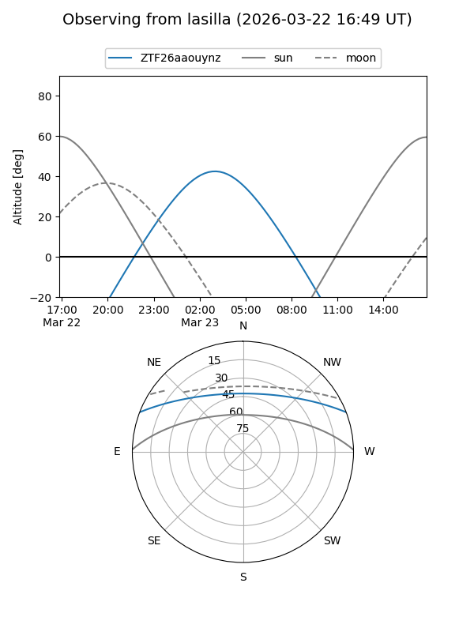
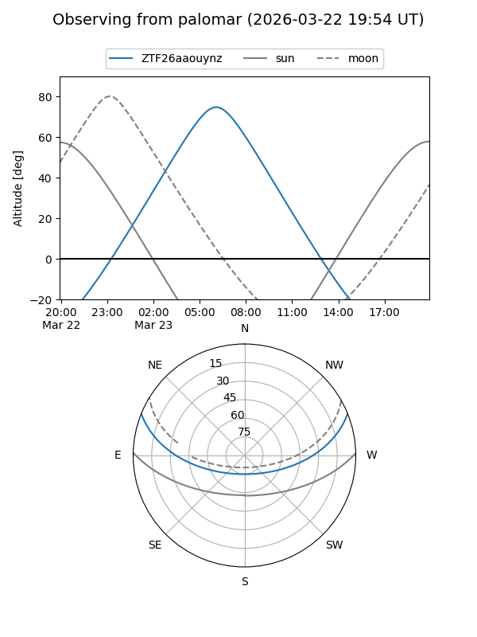

ZTF26aaouynz
Target ZTF26aaouynz at 2026-03-23 08:03
Aliases and brokers:
FINK: link
Lasair: link
ALeRCE: link
alt names
ZTF26aaouynz (ztf,fink_ztf)
Coordinates:
equatorial (ra, dec) = 154.5463,+18.35996
equatorial (HMS+DMS) = 10:18:11.12,+18:21:35.87
galactic (l, b) = (218.6805,+53.74537)
Flags:
Photometry:
last ztfg=16.52
1 ztfg detections
Lightcurve
Visibility


Additional plots